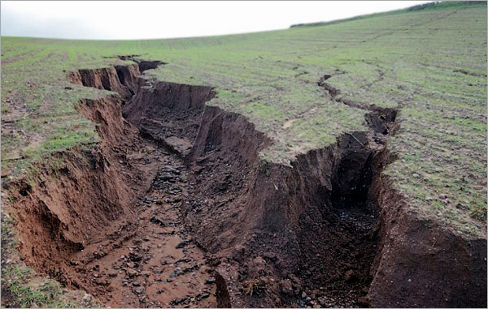

Toprak erozyonunun nedenleri, etkileri ve korunma stratejileri.
Toprak Erozyonu:
Toprak erozyonu, toprağın su, rüzgar veya insan etkisiyle aşınması ve kaybedilmesidir. Bu, tarım alanlarında, dağlık bölgelerde ve kıyı şeritlerinde yaygın bir sorundur. Erozyon, verimli toprağın kaybına, bitki örtüsünün azalmasına ve su kaynaklarının kirlenmesine neden olabilir.
Erozyonun Nedenleri:
Suyun Etkisi: Şiddetli yağışlar veya akarsuların taşıdığı su, toprağın aşınmasına neden olabilir.
Rüzgar: Güçlü rüzgarlar, toprağı taşıyabilir ve aşındırabilir.
Tarım Uygulamaları: Toprağın işlenmesi, tarım alanlarında bitki örtüsünün yokluğu, erozyon riskini artırabilir.
Korunma Yöntemleri:
Bitki Örtüsü: Bitki örtüsü erozyonu azaltabilir. Bitkiler, toprağı sabitleyerek ve erozyonu engelleyerek korur.
Teraslama: Eğimli arazilerde teraslar oluşturmak, suyun aşırı akışını engelleyebilir ve erozyonu azaltabilir.
Rüzgar Kırıcılar ve Sediman Setleri: Rüzgar kırıcılar ve sediman setleri gibi yapılar, rüzgarın toprağı taşımasını önleyebilir.
Toprak Koruma Yöntemleri: Toprak işleme tekniklerinin kullanımı, erozyonu azaltabilir. Örneğin, doğrudan ekim veya sürükleme işlemleri erozyon riskini azaltabilir.
Toprak erozyonunu önlemek ve toprak kaybını engellemek, tarım verimliliğini korumak ve çevreyi korumak için önemlidir. Bu yöntemler, toprak koruma teknikleriyle birleştirilerek erozyonun etkilerini minimize etmeye yardımcı olabilir.
Bilgi Almak İçin Tıkla